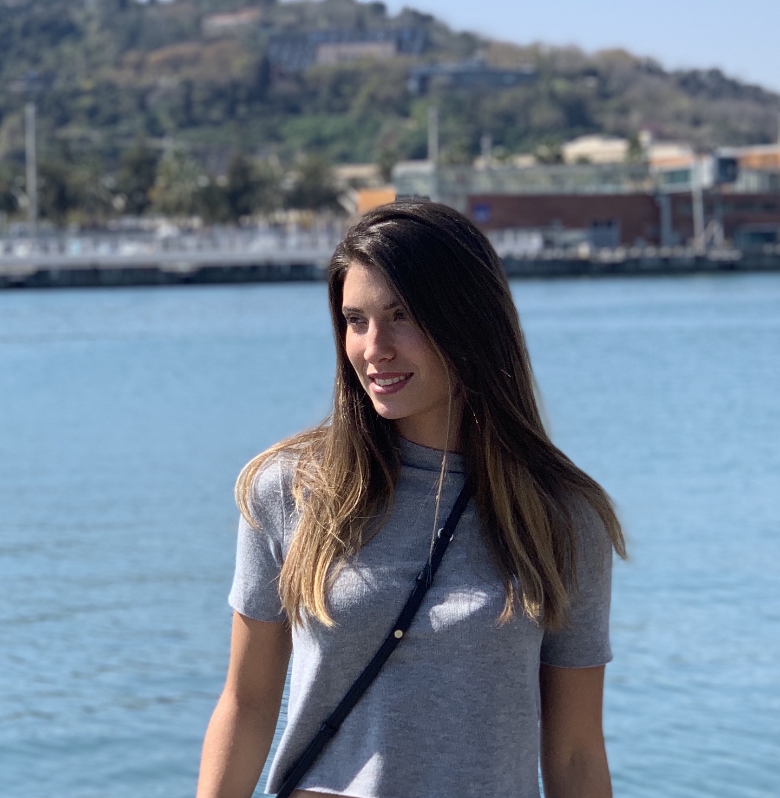

Hello, I'm Aline Tabar

23', French from 📍 Lyon
Wonderlust 🌍, Food 🍝 drink 🍷 and music 🎧 lover
Master Degree at INSEEC BS 🎓
Digital project manager at Schneider Electric 💼
📧 aline.tabar@inseec-france.com
📞 0614694553
Employment history
Digital Project manager : Schneider Electric - Grenoble, France
Hold and update the Website of the company for Home & Distribution Market.
Lead some project about Schneider product launching, Events ...
Marketing Assistant/Community Manager : Hush Communications - Sydney, Australia
Hold the website and Instagram's page of brands and Hush. Community management, sponsorships and collaboration with brands.
Service provider: Student Pop - Lyon, France / February to April 2019
Give a boost to some starts up for administrative tasks, Street Marketing, Sales events
Event Hostess: City One Events - Lyon, France / November 2018 to February 2019
I welcome and informe clients, check the register, manage
the cloakroom
Humanitarian Internship: Gawad Kalinga - Roxas City, Philippines / From June 2018 to July 2018
I led a dental project in a village, I managed a team, I organized french and english courses for kids, I planned a budget, some meetings and established deadlines...
Employment & catering service/ cleaning agent: Ibis Hostel - Chasse-sur-Rhône, France / From October 2012 to May 2018
At week ends and school holidays. I welcomed,
orientated and served the customer.
Internship as Manager assistant / carry out a project: Seri Vienna - Vienne, France / From November to December 2016
I led a project alone about the safety and risks inside the company.
Internship as manager assistant: Seri Vienna - Vienne, France / From May to June 2016
I held the welcome, managed administrative tasks like order taking, propose quotes and biling. I checked emails and phone calls. I led a meeting to present my project.
Education and training qualifications
Preparing a Master Degree - Business School
Inseec Business School - groupe INSEEC Lyon, France / Since September 2017
Two Years Technical Degree - Manager assistant
Robin Institution Vienne, France / From September 2015 to June 2017